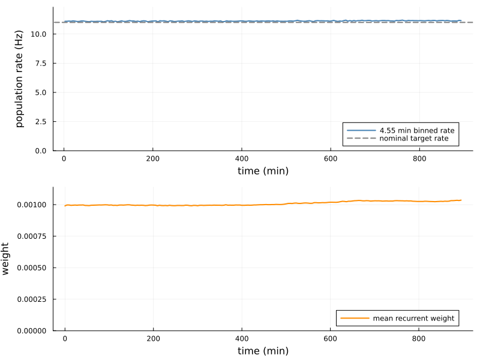
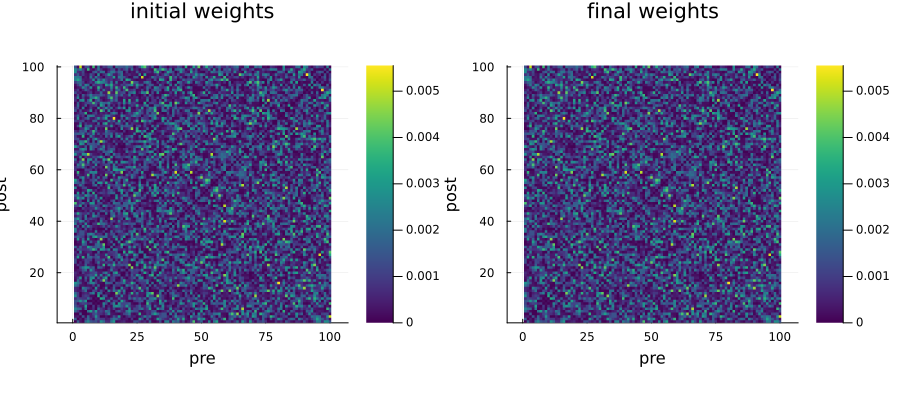
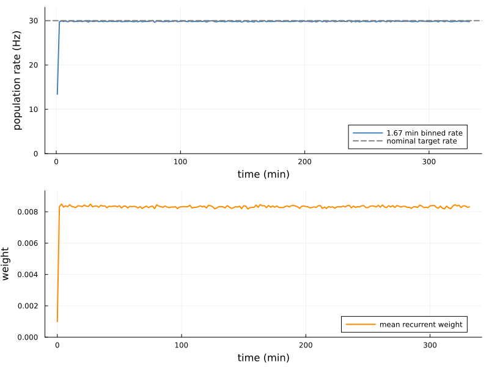
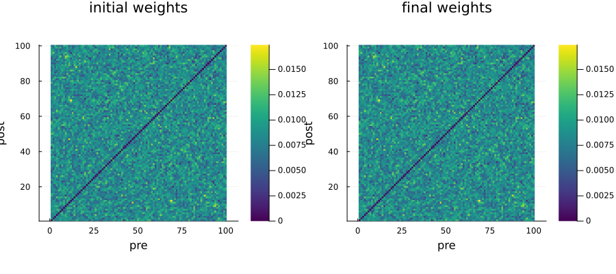
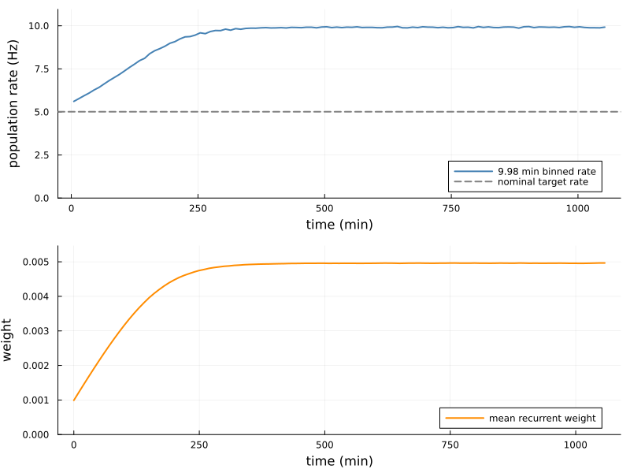
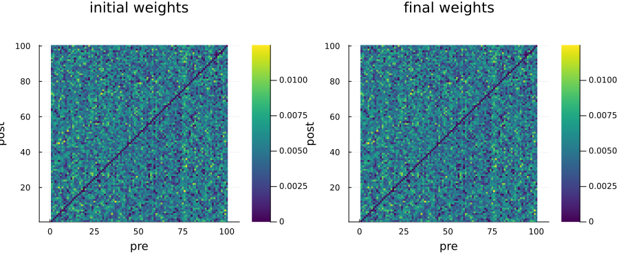

Excitatory-only networks
This example compares three plasticity regimes in a recurrent network containing only excitatory neurons. The examples reproduce the tuning symmetric, rate-dominated symmetric, and asymmetric STDP regimes from the earlier HawkesSimulator.jl example using the current plasticity parametrization.
The old rules described the positive and negative sides of the learning window with A and θ. The current rules instead use a global learning rate η and a balance parameter B. Matching the two learning windows gives
\[\eta = A(1-\theta), \qquad B = \frac{1+\theta}{1-\theta}, \qquad \alpha_{\mathrm{new}} = \frac{\alpha_{\mathrm{old}}}{1-\theta}.\]
We use 100 neurons instead of 10. Per-synapse weights and η are therefore divided by 10, while the simulation contains 10 times as many spikes. Each network records only its population rate and recurrent weights.
Initialization
using LinearAlgebra
using Random
using Statistics
using Plots
using HawkesPlasticNetworks; global const H = HawkesPlasticNetworks;Parameters shared by all three networks are:
n_neurons = 100
n_spikes = 60_000_000
τ_kernel = 50E-3
τ_plasticity = 40E-3
initial_weight = 1E-3
weight_min = 1E-6
n_recording_points = 200;Symmetric STDP in the tuning regime
In the first regime, the target rate lies just above the external input. The small negative value of B gives almost balanced potentiation and depression. Correlations can nevertheless push the final rate above the nominal target and produce a sparse symmetric weight matrix.
input_tuning = 10.0
target_rate_tuning = 11.0
η_tuning = 1.68E-7
B_tuning = -1/21
α_tuning = 11/21
γ_tuning = 10.0
weight_max_tuning = 0.01
weights_start_tuning = fill(initial_weight,n_neurons,n_neurons)
weights_start_tuning[diagind(weights_start_tuning)] .= 0.0
population_tuning = H.PopulationExpKernelExcitatory(
n_neurons,τ_kernel;label="tuning")
plasticity_tuning = H.PlasticitySymmetricSTDP(
η_tuning,B_tuning,α_tuning,α_tuning,
τ_plasticity,γ_tuning,weights_start_tuning;
weight_min=weight_min,weight_max=weight_max_tuning)
connection_tuning = H.ConnectionWithWeights(
population_tuning,weights_start_tuning,population_tuning;
plasticity_rules=(plasticity_tuning,))
connected_tuning = H.ConnectedPopulationExpKernel(
population_tuning,fill(input_tuning,n_neurons),
(connection_tuning,population_tuning));The expected duration at the target rate determines the recording interval. At most about 200 values from each recorder are used in the plots.
recording_end_tuning =
n_spikes/(n_neurons*target_rate_tuning)
recording_interval_tuning =
recording_end_tuning/n_recording_points
recorder_rate_tuning = H.RecorderPopulationRate(
population_tuning,recording_end_tuning;
Δt=recording_interval_tuning)
recorder_weight_tuning = H.WeightMatrixRecorder(
connection_tuning.weights,recording_interval_tuning,
recording_end_tuning)
network_tuning = H.RecurrentNetworkExpKernel(
(connected_tuning,),
(recorder_rate_tuning,recorder_weight_tuning));Run the tuning-regime network
Random.seed!(0)
t_end_tuning = let t_now = 0.0
H.reset!(network_tuning)
for _ in 1:n_spikes
t_now = H.dynamics_step!(t_now,network_tuning)
end
t_now
end
rate_tuning = H.get_content(recorder_rate_tuning)
weight_tuning = H.get_content(recorder_weight_tuning)
weights_end_tuning = copy(connection_tuning.weights)
println(
"Tuning-regime simulation completed after ",
round(t_end_tuning/3600;digits=2)," hours")
println("Recorded rate points: ",length(rate_tuning.times))
println("Recorded weight points: ",length(weight_tuning.times))Tuning-regime simulation completed after 14.99 hours
Recorded rate points: 197
Recorded weight points: 198Population rate and mean recurrent weight
plot_rate_tuning = plot(
rate_tuning.times./60,rate_tuning.rates;
label="$(round(recording_interval_tuning/60;digits=2)) min binned rate",
color=:steelblue,
linewidth=2,
xlabel="time (min)",
ylabel="population rate (Hz)",
ylim=(0,1.1maximum(rate_tuning.rates)),
legend=:bottomright)
hline!(
plot_rate_tuning,[target_rate_tuning];
label="nominal target rate",
color=:grey,
linestyle=:dash,
linewidth=2);
mean_weight_tuning =
vec(mean(weight_tuning.weights;dims=(2,3)))
plot_weight_tuning = plot(
weight_tuning.times./60,mean_weight_tuning;
label="mean recurrent weight",
color=:darkorange,
linewidth=2,
xlabel="time (min)",
ylabel="weight",
ylim=(0,1.1maximum(mean_weight_tuning)),
legend=:bottomright);
plot(
plot_rate_tuning,plot_weight_tuning;
layout=(2,1),
size=(800,600))
Initial and final recurrent weights
weight_clims_tuning = (
0.0,
max(maximum(weights_start_tuning),maximum(weights_end_tuning)))
plot(
heatmap(
weights_start_tuning;
ratio=1,
xlabel="pre",
ylabel="post",
color=:viridis,
clims=weight_clims_tuning,
title="initial weights"),
heatmap(
weights_end_tuning;
ratio=1,
xlabel="pre",
ylabel="post",
color=:viridis,
clims=weight_clims_tuning,
title="final weights");
layout=(1,2),
size=(900,400))
Symmetric STDP in the rate-dominated regime
Making B substantially negative emphasizes the rate terms. The target rate can now sit well above the external input, and excitation becomes distributed more evenly while the recurrent matrix remains symmetric.
input_blanket = 5.0
target_rate_blanket = 30.0
η_blanket = 4E-7
B_blanket = -0.6
α_blanket = 18.0
γ_blanket = 10.0
weight_max_blanket = Inf
weights_start_blanket = fill(initial_weight,n_neurons,n_neurons)
weights_start_blanket[diagind(weights_start_blanket)] .= 0.0
population_blanket = H.PopulationExpKernelExcitatory(
n_neurons,τ_kernel;label="blanket")
plasticity_blanket = H.PlasticitySymmetricSTDP(
η_blanket,B_blanket,α_blanket,α_blanket,
τ_plasticity,γ_blanket,weights_start_blanket;
weight_min=weight_min,weight_max=weight_max_blanket)
connection_blanket = H.ConnectionWithWeights(
population_blanket,weights_start_blanket,population_blanket;
plasticity_rules=(plasticity_blanket,))
connected_blanket = H.ConnectedPopulationExpKernel(
population_blanket,fill(input_blanket,n_neurons),
(connection_blanket,population_blanket))
recording_end_blanket =
n_spikes/(n_neurons*target_rate_blanket)
recording_interval_blanket =
recording_end_blanket/n_recording_points
recorder_rate_blanket = H.RecorderPopulationRate(
population_blanket,recording_end_blanket;
Δt=recording_interval_blanket)
recorder_weight_blanket = H.WeightMatrixRecorder(
connection_blanket.weights,recording_interval_blanket,
recording_end_blanket)
network_blanket = H.RecurrentNetworkExpKernel(
(connected_blanket,),
(recorder_rate_blanket,recorder_weight_blanket));Run the rate-dominated network
Random.seed!(0)
t_end_blanket = let t_now = 0.0
H.reset!(network_blanket)
for _ in 1:n_spikes
t_now = H.dynamics_step!(t_now,network_blanket)
end
t_now
end
rate_blanket = H.get_content(recorder_rate_blanket)
weight_blanket = H.get_content(recorder_weight_blanket)
weights_end_blanket = copy(connection_blanket.weights)
println(
"Rate-dominated simulation completed after ",
round(t_end_blanket/3600;digits=2)," hours")
println("Recorded rate points: ",length(rate_blanket.times))
println("Recorded weight points: ",length(weight_blanket.times))Rate-dominated simulation completed after 5.6 hours
Recorded rate points: 200
Recorded weight points: 200Population rate and mean recurrent weight
plot_rate_blanket = plot(
rate_blanket.times./60,rate_blanket.rates;
label="$(round(recording_interval_blanket/60;digits=2)) min binned rate",
color=:steelblue,
linewidth=2,
xlabel="time (min)",
ylabel="population rate (Hz)",
ylim=(0,1.1maximum(rate_blanket.rates)),
legend=:bottomright)
hline!(
plot_rate_blanket,[target_rate_blanket];
label="nominal target rate",
color=:grey,
linestyle=:dash,
linewidth=2);
mean_weight_blanket =
vec(mean(weight_blanket.weights;dims=(2,3)))
plot_weight_blanket = plot(
weight_blanket.times./60,mean_weight_blanket;
label="mean recurrent weight",
color=:darkorange,
linewidth=2,
xlabel="time (min)",
ylabel="weight",
ylim=(0,1.1maximum(mean_weight_blanket)),
legend=:bottomright);
plot(
plot_rate_blanket,plot_weight_blanket;
layout=(2,1),
size=(800,600))
Initial and final recurrent weights
weight_clims_blanket = (
0.0,
max(maximum(weights_start_blanket),maximum(weights_end_blanket)))
plot(
heatmap(
weights_start_blanket;
ratio=1,
xlabel="pre",
ylabel="post",
color=:viridis,
clims=weight_clims_blanket,
title="initial weights"),
heatmap(
weights_end_blanket;
ratio=1,
xlabel="pre",
ylabel="post",
color=:viridis,
clims=weight_clims_blanket,
title="final weights");
layout=(1,2),
size=(900,400))
Asymmetric STDP
The final network replaces the symmetric rule with asymmetric STDP. The near-balanced learning window favors directional connections: reciprocal symmetry is suppressed and many weights approach one of their bounds.
input_asymmetric = 5.0
target_rate_asymmetric = 5.01
η_asymmetric = 1.76E-7
B_asymmetric = -1/11
α_asymmetric = 0.45545454545454545
γ_asymmetric = 1.0
weight_max_asymmetric = 0.025
weights_start_asymmetric = fill(initial_weight,n_neurons,n_neurons)
weights_start_asymmetric[diagind(weights_start_asymmetric)] .= 0.0
population_asymmetric = H.PopulationExpKernelExcitatory(
n_neurons,τ_kernel;label="asymmetric")
plasticity_asymmetric = H.PlasticityAsymmetricSTDP(
η_asymmetric,B_asymmetric,α_asymmetric,α_asymmetric,
τ_plasticity,γ_asymmetric,weights_start_asymmetric;
weight_min=weight_min,weight_max=weight_max_asymmetric)
connection_asymmetric = H.ConnectionWithWeights(
population_asymmetric,weights_start_asymmetric,population_asymmetric;
plasticity_rules=(plasticity_asymmetric,))
connected_asymmetric = H.ConnectedPopulationExpKernel(
population_asymmetric,fill(input_asymmetric,n_neurons),
(connection_asymmetric,population_asymmetric))
recording_end_asymmetric =
n_spikes/(n_neurons*target_rate_asymmetric)
recording_interval_asymmetric =
recording_end_asymmetric/n_recording_points
recorder_rate_asymmetric = H.RecorderPopulationRate(
population_asymmetric,recording_end_asymmetric;
Δt=recording_interval_asymmetric)
recorder_weight_asymmetric = H.WeightMatrixRecorder(
connection_asymmetric.weights,recording_interval_asymmetric,
recording_end_asymmetric)
network_asymmetric = H.RecurrentNetworkExpKernel(
(connected_asymmetric,),
(recorder_rate_asymmetric,recorder_weight_asymmetric));Run the asymmetric network
Random.seed!(0)
t_end_asymmetric = let t_now = 0.0
H.reset!(network_asymmetric)
for _ in 1:n_spikes
t_now = H.dynamics_step!(t_now,network_asymmetric)
end
t_now
end
rate_asymmetric = H.get_content(recorder_rate_asymmetric)
weight_asymmetric = H.get_content(recorder_weight_asymmetric)
weights_end_asymmetric = copy(connection_asymmetric.weights)
println(
"Asymmetric simulation completed after ",
round(t_end_asymmetric/3600;digits=2)," hours")
println("Recorded rate points: ",length(rate_asymmetric.times))
println("Recorded weight points: ",length(weight_asymmetric.times))Asymmetric simulation completed after 17.78 hours
Recorded rate points: 106
Recorded weight points: 107Population rate and mean recurrent weight
plot_rate_asymmetric = plot(
rate_asymmetric.times./60,rate_asymmetric.rates;
label="$(round(recording_interval_asymmetric/60;digits=2)) min binned rate",
color=:steelblue,
linewidth=2,
xlabel="time (min)",
ylabel="population rate (Hz)",
ylim=(0,1.1maximum(rate_asymmetric.rates)),
legend=:bottomright)
hline!(
plot_rate_asymmetric,[target_rate_asymmetric];
label="nominal target rate",
color=:grey,
linestyle=:dash,
linewidth=2);
mean_weight_asymmetric =
vec(mean(weight_asymmetric.weights;dims=(2,3)))
plot_weight_asymmetric = plot(
weight_asymmetric.times./60,mean_weight_asymmetric;
label="mean recurrent weight",
color=:darkorange,
linewidth=2,
xlabel="time (min)",
ylabel="weight",
ylim=(0,1.1maximum(mean_weight_asymmetric)),
legend=:bottomright);
plot(
plot_rate_asymmetric,plot_weight_asymmetric;
layout=(2,1),
size=(800,600))
Initial and final recurrent weights
weight_clims_asymmetric = (
0.0,
max(maximum(weights_start_asymmetric),maximum(weights_end_asymmetric)))
plot(
heatmap(
weights_start_asymmetric;
ratio=1,
xlabel="pre",
ylabel="post",
color=:viridis,
clims=weight_clims_asymmetric,
title="initial weights"),
heatmap(
weights_end_asymmetric;
ratio=1,
xlabel="pre",
ylabel="post",
color=:viridis,
clims=weight_clims_asymmetric,
title="final weights");
layout=(1,2),
size=(900,400))
This page was generated using Literate.jl.